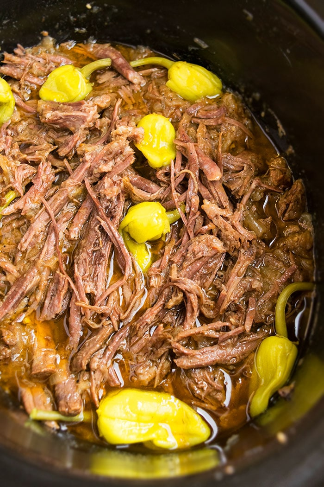

Mississippi Roast

Description
An easy but delectable meal that has the bonus of making your house smell delicious too! Goes great in-between brioche buns or next to mashed potatoes.
Ingredients
- 3-4 pounds ofchuck roast
- 1 packet of ranch dressing mix
- 1 packet of au jus gravy mix
- 1/4 cup butter
- 8-12 pepperonchini peppers (jarred)
Steps
- Place roast in a slow cooker and sprinkle the top with the ranch dressing mix and the au jus mix. Place peppers on top of the mixes, and add the butter.
- Cook over low heat for 8 hours.
Back to home